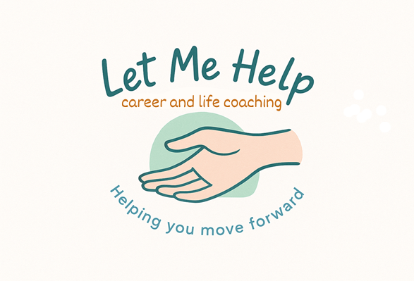

Helping you move forward in your life – with clarity, confidence, and care. Serving Ramsbottom, Bury, Bolton, and Greater Manchester.
Here’s what clients have shared about working with me.
“Working with Janine during my career change was truly life-changing. We looked holistically at all areas of my life, including my skills, health, and work and life experience, which helped me realise I have autonomy and far more options than I ever thought.
Janine is an excellent life coach and career coach. I now know what I want in life and no longer feel uncertain about my future. I have a new CV, feel confident in how to job search effectively, and have already been applying for roles. I also have an interview coming up, which Janine has helped me prepare for.
All of this in just six sessions. I would highly recommend her.”
“I was hoping to get help with interview preparation and knowing how to answer the different interview questions I would be asked.
I found the expertise of answering such questions helpful and I found the information and research compiled for the role to be helpful for interview preparation.
I now feel more comfortable answering interview questions and believe if I’m not successful with the role I now know what information is needed for future roles that I apply for.”